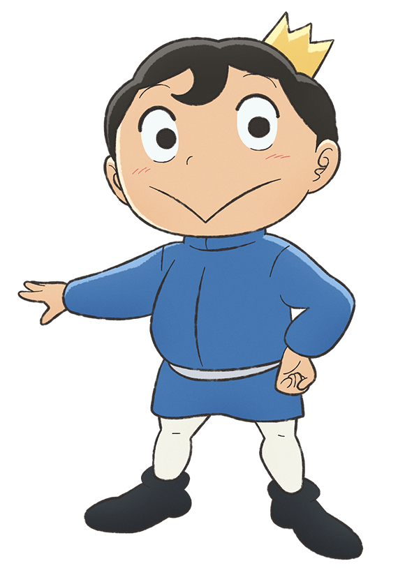
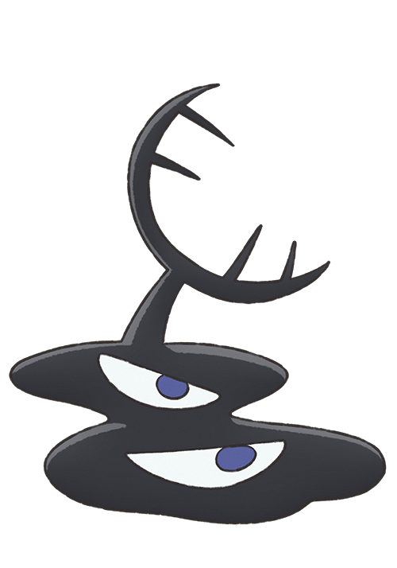
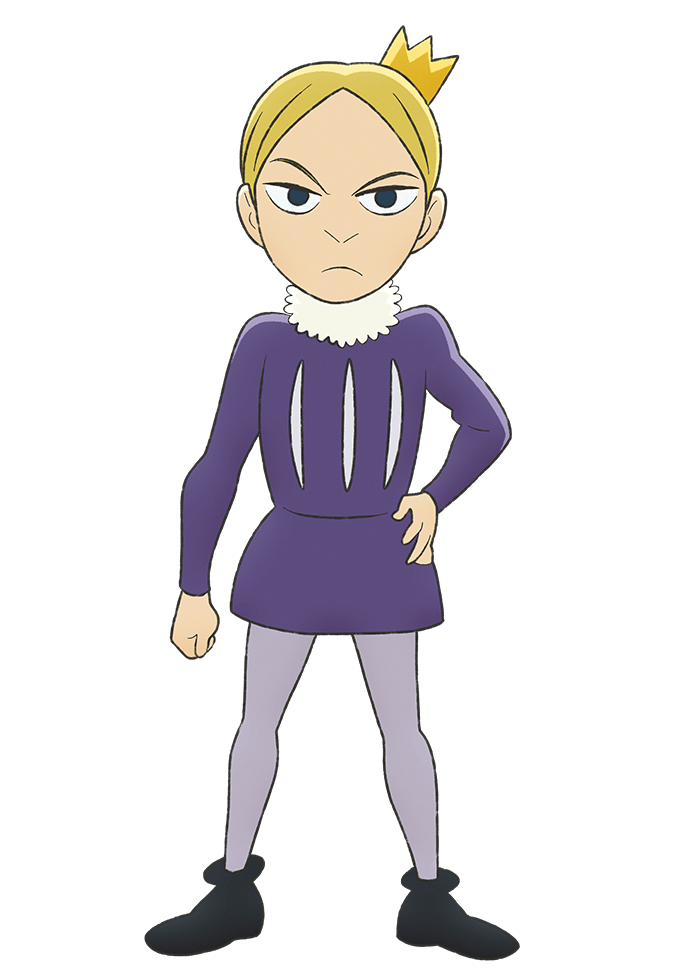

Primary characters are the big ones: the hero/protagonist, the
villain/antagonist, the main viewpoint character.
These are the
characters the reader identifies as the ones the story is about.

Bojji
The main protagonist of the story and the first prince of the
Kingdom of Bosse. Born deaf and tiny in size, he was ridiculed and
scorned openly by many within the palace and kingdom. Despite his
disability, Bojji dreams of becoming a strong king like his father
and always tries to maintain a smile in front of others. He is known
for his kindness, which has earned him many unexpected allies,
diligence, and intuition, which allows him to read lips and know
what people are saying. He also possesses extreme agility and
dodging ability unconventional for kings that tend to rely on
strength, and impervious to poison. Following Daida's coronation, he
and Kage set off on a journey.

Kage
A last surviving member of the shadow clan and Bojji's companion.
Born to a clan of assassins, Kage was a young child when he
witnessed his entire family murdered by the kingdom they served. He
subsequently escaped and was exploited by a thug, who eventually
sold him out for his ransom. Tempered by the rough way of the world,
Kage then grew up using his clan's abilities to make a living off
thieving. He eventually meets Bojji and is touched by his kindness
and his situation, pledging to be his faithful friend. He is tasked
by Bebin to follow and protect Bojji on their journey.

Daida
Bojji's younger half-brother, the birth son of Queen Hiling and the
current king. Like Bojji he is hardworking and resilient, but
possesses a streak of pride and arrogance in his strength that seems
to take after their father. Deep down, he is secretly jealous of his
brother, whom he believes was able to get everyone's love and the
position of king without any effort. In the time leading up to his
coronation, Daida is manipulated by a Magic Mirror and is forcibly
made the vessel for Bosse's reincarnation.